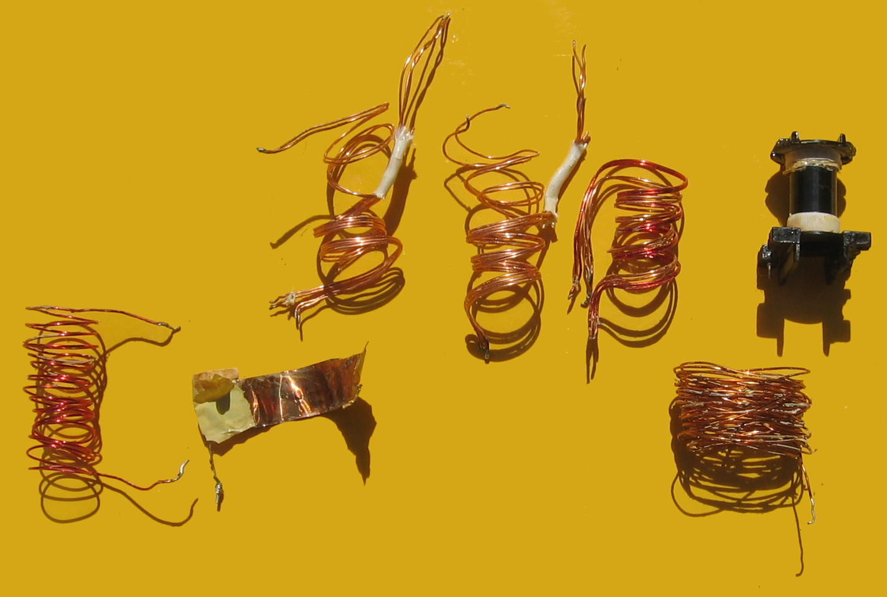
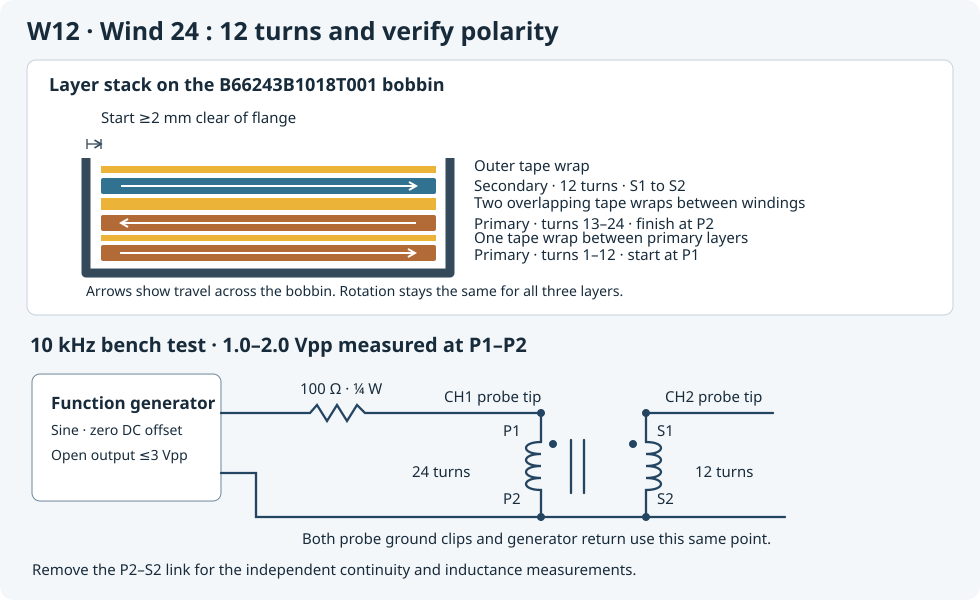

Hand-wind and test a ferrite transformer
Wind 24 primary turns and 12 secondary turns on a matched ferrite core and bobbin. Check the winding resistance, then use a small AC signal to check the ratio and polarity. This is a milliwatt bench trainer for learning the process used to make inverter magnetics.


Photograph by Hans Haase. Original photograph · CC BY-SA 4.0.

Watch the hand-winding technique. At 1:46 look at how the former is held. At 2:57 identify the start and finish pins, then watch the insulation and lead routing at 5:59. Use the turns and bench limits on this page for your build. SDG Electronics · Winding and assembly demonstration.
Buy one matched core set and one bobbin
| Quantity and part | Specification and India source |
|---|---|
| 2 · E42/21/20 ferrite halves View core | TDK B66329G0000X197, N97, ungapped. Buy two pieces, each one E-shaped half. The set has an effective area of 234 mm² and nominal inductance factor 5,400 nH/turn². Check the suffix and inspect mating faces for chips. DigiKey India · ₹570.84 per half, price reference and photo · TDK · Specs. |
| 1 · One-section bobbin View bobbin | TDK B66243B1018T001, 18 pins, one winding compartment for E42/21/20. Inspect flanges and pin fit. Dry-fit both core halves before winding. DigiKey India · ₹300.03 listing · TDK · Former dimensions and pin drawing. |
| 1 · Reel of winding wire View wire reel | 26 SWG enamelled copper, approximately 0.457 mm bare diameter. Ask for 100% copper and the coating and temperature class. The 50 g listing gives about 0.491 mm over enamel and 0.105 Ω/m. Allow about 3.3 m for primary and 1.9 m for secondary including tails, with spare left for practice. Project Point · ₹270.64 per 50 g reel · Emsons India · Bare and finished wire dimensions by gauge. |
| About 1 m · PET winding tape View tape | 3M 1350 12MM, 12 mm wide, approximately 0.065 mm thick. Use a clean offcut from a winding shop or buy a roll. A wider 1350F-1 roll is also available. Slit clean strips on a release liner if needed. element14 India · ₹1,778.02 per 66 m roll · Parker Electronics · ₹650 for 25.4 mm tape shown. |
| 4 × 25 mm · Lead sleeving View sleeves | Use thin PTFE slip-on sleeves with about 1 mm clear bore to cover the magnet wire where it crosses the bobbin flange. Confirm the supplier's measured stock dimensions and ask for a short length. PTFE Electronics, Ghaziabad · Photo and enquiry. |
| 1 · Series test resistor View resistor | 100 Ω, ¼ W. Place it between the generator and the primary, with insulated test clips and a return jumper. A Yageo MFR-25FBF52-100R is listed at ₹4.52 per resistor with a 10-piece minimum. A local electronics shop can sell one. element14 India · Order 3951794 · Photo · David Ludovino, CC BY-SA 3.0, resized. |


Listed prices checked 22 November 2026. Two halves, one bobbin and the 50 g reel total ₹1,712.35 before other items, shipping and any taxes. With the wider tape and ten resistors the listed purchase subtotal is ₹2,407.55. With the 12 mm roll it is ₹3,535.57. Ask a winding shop to quote tape, sleeving and bench access by the job when making the first unit.
Set out the tools and test equipment
Use a rule, caliper, side cutters, fine abrasive for the wire ends and a temperature-controlled soldering iron with local fume extraction. Keep the ferrite out of the bobbin while winding. Hold the former by its flanges and count aloud, or use a hand winder with soft spacers sized to the former's opening. The demonstration shows one way to adapt the shaft. Use the bobbin drawing to locate the pin numbering before marking it.


Tool photographs. Caliper · Jacek Halicki, CC BY-SA 4.0 · Soldering · Bill Earl and Adafruit, CC BY-SA 3.0 · Meter · Anselm Schüler, CC BY-SA 4.0.


| Test equipment | Setting and source |
|---|---|
| LCR meter View LCR meter | Use an open/short-compensated 10 kHz LCR meter with short leads. UNI-T UT612 supports 10 kHz and 0.6 V RMS nominal test excitation. ToolWorld · ₹15,850 listed including GST. |
| Sine generator View generator | Use a bench generator with 10 kHz sine, adjustable amplitude and DC offset. A shop's Rigol DG811 or equivalent is sufficient. Measure the generator's high-impedance output yourself before connecting the trainer. Salicon India · DG811 example · Rigol · Settings and manual. |
| Two-channel scope View scope | Use two matched, compensated probes with both tips measured against the common return. Match attenuation settings in the scope and on the probes. A basic 2-channel bench scope suffices. Revine Tech, Pune · Rigol example, ₹41,064 listed. |


Wind and assemble the trainer


- Check the bobbin against the core. Slide both halves in without tools and make sure they meet. Take them out before winding. Mark four bobbin pins and record their physical positions on a sketch. Use P1 and P2 for the primary start and finish and S1 and S2 for the secondary start and finish. Select one pair on each pin bank to make the wires easy to trace.
- Start the primary. Cut about 3.3 m. Leave an 80 mm starting tail and slide a sleeve over the part that crosses the flange. Tape the tail to the outside temporarily. Keep the wire at least 2 mm from sharp flange edges. Lay the first 12 turns side by side from the start end. One complete loop around the centre tube counts as one turn. Hold the wire gently taut.
- Finish the primary. Cover the first layer with one turn of tape plus overlap, protecting the layer crossover. Keep the same rotation as you add 12 turns back across the former. Sleeve the finish lead over the exit edge and mark P2. Check 24 turns on the tally before covering with two tape wraps. Overlap seams and cover the entire wound area.
- Wind the secondary. Cut about 1.9 m, reserve two tails and sleeve the exit points. Start at S1 and wind 12 turns in the same rotational sense as P1. Finish at S2. Add the outer tape wrap. Bring the tails to their selected pins without trapping them at a ferrite face.
- Terminate and close. Strip enamel only from the ends that connect to the pins. Tin the cleaned copper, loop each tail around its assigned pin and briefly solder. Inspect for bridges and confirm that the sleeving stays over the flange edge. Slide in the clean core halves, seat the mating faces with gentle pressure and retain them with a removable nonconductive wrap. Measure before changing the fit or applying adhesive.
Measure resistance, ratio and polarity
- Check the disconnected trainer. Short the multimeter leads to record their resistance. Measure P1–P2 and S1–S2 and subtract the lead reading if the meter resolves the difference. TDK's 100 mm nominal mean turn length gives about 0.27 Ω for the primary and 0.14 Ω for the secondary including about 160 mm of wire tails. Use actual installed length × roughly 0.105 Ω/m for a better estimate. With all instruments except the DMM removed, verify the meter indicates open between the separate windings and between each winding and any accessible conductive fixture.
- Measure each inductance separately. Use series inductance at 10 kHz, leaving the other winding open. The calculation L = ALN² gives 3.11 mH primary and 0.778 mH secondary. The core's published −20% to +30% spread implies about 2.49–4.04 mH and 0.62–1.01 mH. Use those as diagnostic ranges and record actual meter frequency, core seating and temperature. Investigate a low result by inspecting air gaps, core part numbers, turn counts and winding damage. TDK · Inductance factor and tolerance.
- Set the generator and scope. Start with a 10 kHz sine and zero DC offset. Confirm the open output is at most 3 Vpp using a high-impedance scope input. With the generator output off, wire its centre conductor through 100 Ω to P1. Jumper P2 and S2 to the generator return, and attach both scope ground clips to this same common point. Put the probe tips on P1 and S1. Enable the output and adjust to 1.0–2.0 Vpp measured across the primary. At the 3 Vpp open-output limit the external resistor alone bounds ideal short-circuit peak current to about 15 mA.
- Check ratio and winding sense. With the secondary connected only to the scope, both waves should rise together at P1 and S1. Compute secondary Vpp divided by primary Vpp. The target is 0.500 with an example ±5% screen (0.475–0.525). A reversed wave calls for checking your winding labels and scope channel inversion. An unexpected ratio calls for checking probe settings, turn count and loading.
At 2.0 Vpp measured across 24 turns and 10 kHz, the sine-wave estimate Bpeak = Vpp/(4πfNAe) gives about 2.8 mT. Lower frequency raises flux at the same voltage. In a welder transformer, the actual switching waveform determines the applied volt-seconds. The production design also needs measured loss, temperature rise, insulation qualification and repeatable winding construction. T08 · Transformer principles.